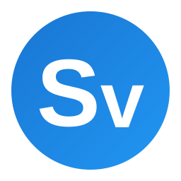
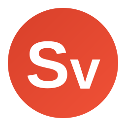

An engine that sees only the sentence in front of it translates that sentence well and the document badly. Supervertaler shows the AI the rest: the document around it, the segments you have confirmed, your terminology, what you know about the client, the numbering Word hides from the grid, and what the figures actually show.
It reads like a translation by someone who has read the whole document – because the AI has.
One licence, both plugins. €20 a month or €200 a year covers Supervertaler for Trados and Supervertaler for memoQ. Use either, or both – no second subscription for working in a second tool.


Supervertaler for TradosTrados Studio 2024 and 2026, as dockable panels inside Studio.

Supervertaler for memoQmemoQ 12, as an MT engine, a terminology provider and a companion window.
Every request assembles a fresh snapshot of your work – ten layers of it – and hands the whole thing to the AI. Some layers come from the CAT tool, some from what you have recorded about the client, and two from parts of the document no CAT tool normally shows you at all: the list numbering Word generates rather than stores, and the figures.